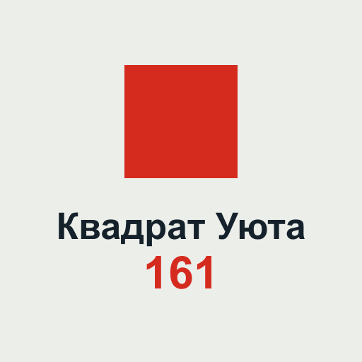
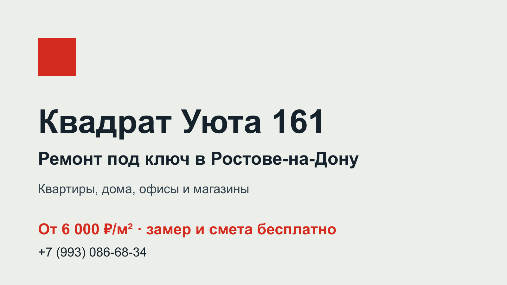

Готовые тексты и оформление для карточек
Копируйте поля в личный кабинет карты. Что нужно от вас, отмечено жёлтым. Мы не придумывали то, чего нет в брифе и на сайте: адрес офиса и отзывы остаются за вами.
1
Поля карточки
| Поле | Что внести |
|---|---|
| Название | Квадрат Уюта 161 |
| Категории | Ремонт квартир; Строительство и ремонт домов; Ремонт офисов; Ремонт магазинов; Дизайн интерьера |
| Телефон | +7 (993) 086-68-34 |
| Сайт | https://cvadrat-uyuta161.ru |
| Зона обслуживания | Ростов-на-Дону и Ростовская область, выезд к клиенту |
| Адрес | Не указываем, пока вы его не прислали. Нужен факт от вас: если принимаете клиентов в офисе, пришлите адрес, и мы допишем. Без адреса карточку в Яндекс Бизнесе можно завести как организацию с выездом к клиенту. |
| График | Ежедневно с 9:00 до 20:00 (как на сайте). Проверьте, что график верный |
| Мессенджеры и соцсети | Макс: https://max.ru/join/dVt4LjvCC6TvuysU-j6cNaHzJFY0-SD0ZsWpIoVnU8Y; ВКонтакте: https://vk.ru/club238488307 |
Одна организацияУ вас несколько ИП. Карточку заводите на ту организацию, с которой заключаете договоры с заказчиками, и во всех трёх сервисах пишите название, телефон и сайт одинаково. Дубли карточек вредят: их приходится объединять.
2
Описание организации
Квадрат Уюта 161: ремонт квартир, домов, офисов и магазинов под ключ в Ростове-на-Дону и Ростовской области. Дизайн интерьера и строительство домов.
Замер и смета бесплатно, цена и сроки записываются в договор, оплата по принятым этапам, гарантия 3 года. Прораб на объекте каждый рабочий день, фотоотчёт ежедневно.
Цены за квадратный метр (ставка «от»): черновая отделка от 6 000 ₽, чистовая от 8 000 ₽, перепланировка от 10 000 ₽, капитальный ремонт квартиры от 12 000 ₽, дома от 15 000 ₽, санузлы от 18 000 ₽. Офисы и магазины: смета по запросу.
Работаем ежедневно с 9:00 до 20:00. Телефон: +7 (993) 086-68-34.
Короткая версия (143 знаков):
Ремонт квартир, домов, офисов и магазинов под ключ в Ростове-на-Дону. Замер и смета бесплатно, цена в договоре, гарантия 3 года. От 6 000 ₽/м².
3
Услуги и цены
| Услуга | Цена |
|---|---|
| Черновая отделка новостроек | от 6 000 ₽/м² |
| Чистовая отделка помещений | от 8 000 ₽/м² |
| Перепланировка и объединение комнат | от 10 000 ₽/м² |
| Капитальный ремонт квартир под ключ | от 12 000 ₽/м² |
| Капитальный ремонт загородных домов | от 15 000 ₽/м² |
| Санузлы под ключ | от 18 000 ₽/м² |
| Ремонт офисов и магазинов | по запросу после замера |
| Дизайн интерьера | по запросу |
| Строительство домов под ключ | по запросу |
Цены с вашего сайта, считаются за квадратный метр фактической площади пола. Если на сайте цены поменяются, поменяйте и в карточках.
4
Логотип и обложка






Логотип собран из красного квадрата и названия, как на сайте. Если у вас есть фирменный логотип, загрузите его вместо этого.
5
Фото для карточки
Карточки с реальными фото получают больше обращений, чем пустые. Нужно 8-10 снимков ваших объектов, лучше в разных состояниях: черновая, чистовая, готовый результат.
Нужен факт от васВы писали, что база фото потерялась и сейчас есть инженерные фото (электрика и сантехника, черновая отделка). Загрузите их в раздел фото: они хорошо показывают скрытые узлы. Новые объекты снимайте на каждом этапе и добавляйте в карточки и на сайт. Фото присылайте нам ссылкой на Яндекс.Диск или Google Диск.
6
Чек-лист запуска
- Заведите карточку в Яндекс Бизнесе, 2ГИС и Google Business Profile под своим аккаунтом (мы аккаунты за вас не создаём).
- Внесите поля, описание и услуги из этой страницы.
- Загрузите логотип, обложку и фото работ.
- Подтвердите организацию (звонок или код).
- Пришлите нам ссылку на отзыв: поставим QR на плакат на странице «Отзывы».